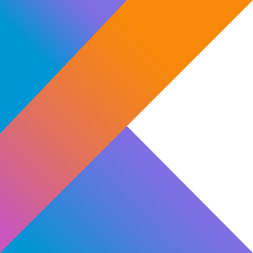

Mon Parcours
Bac Scientifique
Sciences de l'Ingénieur
Obtenu
CFA ITIS
BTS SIO option SLAM
2024 - 2026
Barcodis
Apprenti Développeur
2024 - 2026
En BTS SIO (SLAM) au CFA ITIS • En alternance chez Barcodis
Sciences de l'Ingénieur
Obtenu
BTS SIO option SLAM
2024 - 2026
Apprenti Développeur
2024 - 2026

Le BTS SIO (Services Informatiques aux Organisations) est un diplôme d'État Bac+2 qui forme aux métiers de l'informatique d'entreprise. Il répond aux attentes des organisations en matière de gestion des infrastructures et de développement d'applications.
La formation débute par un socle commun (culture informatique, économie, droit, cybersécurité de base) avant de se spécialiser au second semestre vers l'une des deux options ci-dessous.
Infrastructures, Systèmes & Réseaux
Spécialisation axée sur l’installation, l’administration et la sécurisation des équipements et réseaux informatiques. L’expert SISR garantit le bon fonctionnement du matériel.
Solutions Logicielles & Applications Métiers
Spécialisation centrée sur la conception, le développement et la maintenance de programmes et d'applications. L'expert SLAM traduit les besoins métiers en solutions numériques.

KotlinBarcodis est un acteur majeur et un intégrateur de solutions complètes dédiées à l'identification automatique et à la mobilité professionnelle. L'entreprise ne se contente pas de distribuer du matériel, elle apporte une véritable valeur ajoutée technique via son bureau d'études.
Elle accompagne ses clients (Industrie, Transport, Logistique, Santé) dans la transformation numérique de leur chaîne d'approvisionnement (Supply Chain) grâce aux technologies de pointe :
Conception et maintenance d'applications métier (C#, .NET, Android) pour répondre aux besoins spécifiques des clients internes et externes.
Administration des bases de données SQL Server, création de requêtes complexes et interfaçage avec l'ERP (ex: SAGE).
Rédaction de procédures d'installation, de manuels utilisateurs et de documentation technique pour assurer la pérennité des projets.
Assistance technique de niveau 2, gestion des droits utilisateurs et application des bonnes pratiques de cybersécurité.
Continental • Java & EPC SGTIN-198
Application Android de scan GS1 DataMatrix et d'encodage RFID UHF au format EPC SGTIN-198 pour la traçabilité automobile.
Safran • Java Android & Zebra DataWedge
Application Android de contrôle logistique multi-modes : scan OP, expédition par zones, contrôle inventaire et emplacement, avec validation regex et intégration DataWedge.
Socaphi • VB.NET & .NET Framework 4.0
Application WinForms de logistique (picking, expédition, traçabilité) avec serveur HTTP intégré exposant l'interface en HTML.
BARCODIS • VB.NET & SAGE ERP
Gestion d'inventaire et traçabilité produits avec intégration SAGE, sous-applications Clavis et VerifStock, et serveur HTTP intégré.
BTS SIO • React & Spring Boot
Plateforme complète de gestion d'événements avec API RESTful, authentification JWT et interface React.
BTS SIO • React Native & Expo
Application mobile iOS & Android de la plateforme Evenix. Consultation, inscriptions et gestion d'événements.
Projet Professionnel
Traçabilité automobile — EPC SGTIN-198
L'usine Continental avait besoin d'optimiser sa traçabilité automobile. L'objectif : développer une application Android capable de lire les codes GS1 DataMatrix sur des pièces, d'extraire le GTIN-14 et le numéro de série, puis d'encoder ces données dans une puce RFID UHF au format standard EPC SGTIN-198. L'application permet aussi la lecture et le décodage des puces déjà encodées pour vérification.
Activités (4)
Packages métier (4)
DataMatrix → EditText masqué
Regex GS1 · AI(01) GTIN + AI(21) S/N
Header + Partition + CP + IR + Serial 7-bit
EPC bank · 52 hex · relecture
Le cœur du projet est l'encodage EPC SGTIN-198 : packer les données GS1 dans 208 bits stricts selon le standard EPC. La table de partitions (7 valeurs) détermine comment découper le GTIN en Company Prefix et Item Reference. Le numéro de série est encodé en ASCII 7 bits (140 bits max = 20 caractères). Avant chaque écriture, l'unicité de la puce est confirmée par lecture TID, et la donnée est vérifiée par relecture comparative post-écriture.
Projet Professionnel — BARCODIS
Contrôle logistique multi-modes par scan code-barres
Application Android développée par BARCODIS pour le site Safran SQY. Elle orchestre plusieurs modes de contrôle logistique via scan code-barres sur terminal industriel Zebra DataWedge : scan d'ordres de production (OP), contrôle d'emplacement (Enlogement), expédition par zones, contrôle d'inventaire et scan en lot (Batch/Rack). Les fichiers de référence CSV et TXT chargés depuis le stockage externe définissent les zones valides et les OP attendus.
^[0-9]{"{"}8{"}"}
8 chiffres
^[0-9]{"{"}10{"}"}
10 chiffres
^[0-9]{"{"}12{"}"}
12 chiffres
^[A-Z0-9]{"{"}10{"}"}
10 alphanumériques
^0000[0-9]{"{"}8{"}"}
Préfixe 0000 + 8 chiffres
^USER[0-9]{"{"}4{"}"}
Identifiant utilisateur
L'intégration Zebra DataWedge repose sur un BroadcastReceiver dédié : l'app envoie une config via intent (com.symbol.datawedge.api.SET_CONFIG) pour activer/désactiver le scanner selon l'écran actif. La validation des codes scannés utilise 6 expressions régulières différentes selon le mode, éliminant tout recours à une base de données locale. Les fichiers de référence CSV sont chargés depuis le stockage externe (getExternalStoragePublicDirectory) avec gestion des permissions Android 11+ (MANAGE_ALL_FILES_ACCESS_PERMISSION).
Projet BTS SIO SLAM
Plateforme web de gestion d'événements
Evenix est une SPA React permettant à trois types d'utilisateurs d'interagir avec la plateforme : le Participant (consultation, inscription), l'Organisateur (CRUD complet, suivi des capacités) et l'Administrateur (modération globale). L'API REST Spring Boot expose 36 endpoints répartis en 9 controllers, sécurisés par Spring Security et JWT (HMAC256).
Projet BTS SIO SLAM
Application mobile iOS & Android
EvenixMobile communique avec le même backend Spring Boot que l'application web via l'API REST. Elle propose trois niveaux d'accès : Invité (consultation libre), Participant (inscriptions et réservations) et Organisateur (CRUD complet depuis le mobile). L'authentification repose sur un token JWT stocké en AsyncStorage, injecté automatiquement dans chaque requête.
Projet Client — BARCODIS
Application logistique WinForms avec serveur HTTP intégré
LegitrackCore est une application de gestion logistique développée en VB.NET sur .NET Framework 4.0 pour le client Socaphi. Elle couvre l'ensemble du flux entrepôt : picking par scan EAN, création de commandes d'expédition, traçabilité SSCC et impression d'étiquettes. Elle intègre un serveur HTTP HttpListener qui convertit dynamiquement les formulaires WinForms en pages HTML, permettant d'accéder à l'application depuis un navigateur sans déploiement additionnel.
La classe clsHttpManager.vb convertit dynamiquement les contrôles WinForms en HTML/CSS via System.Net.HttpListener. Cela permet à l'application desktop d'être accessible depuis n'importe quel navigateur sur le réseau local, sans redéveloppement web — une approche technique originale pour l'époque (.NET 4.0).
Projet Client — BARCODIS
Gestion d'inventaire & traçabilité produits (SAGE ERP)
Pandore est une application de gestion d'inventaire et de traçabilité produits développée en VB.NET sur .NET Framework 4.0 par BARCODIS. Elle s'interface avec deux bases SQL Server : la base Pandore (inventaires) et la base SAGE ERP (articles, stocks, dépôts, lots sérialisés). L'application se décline en trois modules : Pandore (inventaire principal), Clavis (gestion des références clés) et VerifStock (vérification de stock). Comme la version Socaphi, elle embarque un serveur HttpListener pour exposer les formulaires WinForms en HTML.
La classe clsProduit.vb joue un rôle de pont entre deux sources de données hétérogènes : la base Pandore (quantités inventoriées) et SAGE ERP (référence article, code famille, lots sérialisés). Elle consolide en un seul objet les quantités par dépôt issues des tables F_ARTSTOCK et F_LOTSERIE de SAGE, permettant un affichage unifié sans duplication de logique dans les formulaires.
Thème : Les Moteurs de Jeux Vidéo & Innovation
Evolution des outils (Unity, Unreal, Godot) et impact sur le développement.
Le standard du mobile et de la VR.
Voir l'analyse →La puissance graphique ultime.
Voir l'analyse →L'alternative Open Source.
Voir l'analyse →Moteur de Jeu
C'est quoi ? Le moteur le plus utilisé au monde pour le jeu mobile, la réalité virtuelle (VR/AR) et les jeux indépendants.
Unity brille par sa communauté immense et son Asset Store. Cependant, la récente polémique sur le "Runtime Fee" (septembre 2023) a fragilisé la confiance des développeurs. Techniquement, l'arrivée de l'ECS (DOTS) promet des performances accrues pour les jeux complexes.
Moteur de Jeu
C'est quoi ? Le moteur d'Epic Games, référence du photoréalisme. Utilisé pour les blockbusters (Fortnite, Matrix) et le cinéma (The Mandalorian).
Unreal a creusé l'écart technologique avec la version 5. Avec Nanite (géométrie virtualisée) et Lumen (lumière globale dynamique), il supprime les contraintes techniques historiques. C'est le futur du rendu temps réel, mais il est très gourmand en ressources.
Moteur de Jeu
C'est quoi ? Le challenger libre et gratuit (licence MIT). Très léger, il gagne en popularité fulgurante comme alternative éthique.
Godot est la réponse à la dépendance aux outils propriétaires. Il est parfait pour la 2D et s'améliore en 3D avec la version 4.0. Son système de "Nœuds" est très intuitif. C'est le choix de la sécurité juridique et de la liberté totale pour les développeurs.